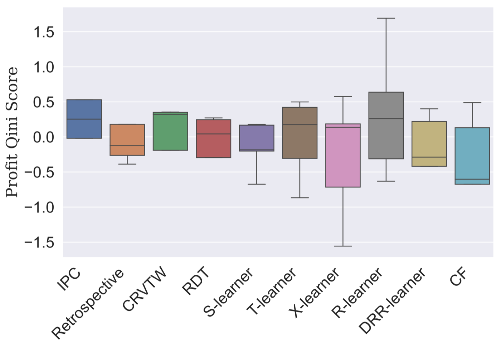
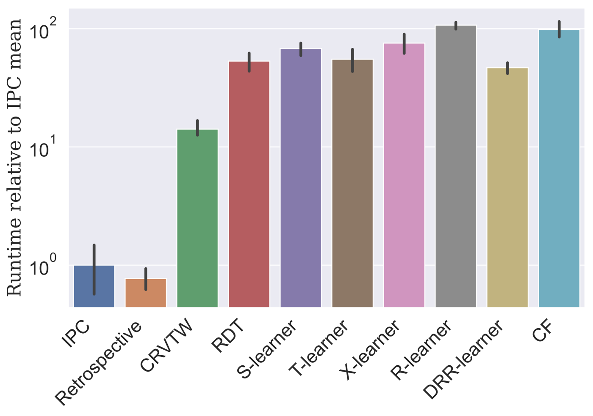
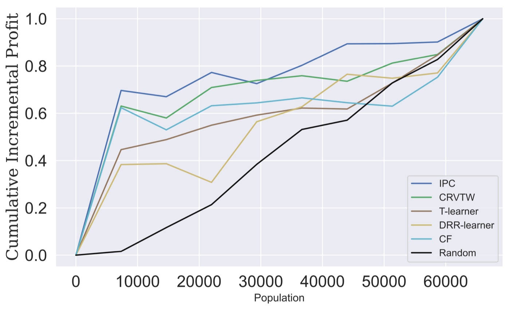

- 購買したデータだけで学習購買しなかった行は捨てる。利益がゼロの行の多さや、1件の購買に多数の検索が対応する問題を避けられる。
- 回帰モデルは1つ変換した目的変数 Z を普通の回帰で学習すれば、その期待値が IPC になる（付録で導出）。
- 学習時間はおよそ2桁短い合成のクーポン実験での結果。同じく購買データだけを使う retrospective 推定量も同程度に短い。
割引やクーポンのコストは購買が起きたときにしか発生しない
EC の販促は A/B テストで効果を測り、平均処置効果（ATE）がはっきり正なら全員に配る、という運用が多い。しかし論文によれば、多くの販促は母集団のごく一部に対してしか利益が出ない。そこで、部分集団ごとの処置効果（CATE）を推定して配る相手を選ぶアップリフトモデリングが使われてきた。
ただし、これまでの研究の多くは購買率（コンバージョン）の最大化を目標にしており、販促1回あたりのコストが一定だと暗に仮定している。購買は増えても、コストがそれを上回れば利益は減る。本論文は、コストが購買時にしか発生しない場合（応答依存コスト、\(C=0 \Rightarrow \Pi=0\)）に絞って、利益を直接扱う。
利益のアップリフトを検索データ全体で学習すると、ゼロの多さと複数モデルが足かせになる
利益の CATE は \(\tau_\Pi(\mathbf{x}) = \mathbb{E}[\Pi \mid \mathbf{x}, T=1] - \mathbb{E}[\Pi \mid \mathbf{x}, T=0]\) で、販促を配ったときに検索1件あたりで増える利益を表す。これを推定する既存手法について、論文は次の3つの限界を挙げる。
- モデルが複数要る。メタ学習器などは別々に最適化した複数のモデルを組み合わせる。
- 利益がゼロの行が多すぎる（zero-inflated）。購買しなければコストも利益もゼロになるためで、標準的な機械学習アルゴリズムの多くはこれを想定していない。
- 検索データはノイズが多い。購買率は約3%と低く、スクレイパーやクローラーが混じり、1件の購買に多数の検索が対応する。
IPC は利益の CATE を購買確率で割った「購買1件あたりの増分利益」である
論文が提案する IPC（Incremental Profit per Conversion）は次の量である。分母の \(\Pr(C=1 \mid \mathbf{x})\) は、処置群と対照群を合わせたときの購買確率を表す。
検索1件あたりの増分利益ではなく販促を投資とみたときの効率を購買単位で測る、というのが論文の考え方である。IPC は購買1件あたりの支出目標を決める判断ルールや、文脈を並べる判断ルール（アップリフトモデリングでよく使われる方法）と組み合わせて使えるとされている。
論文の Table 1 の例で計算してみる。文脈 \(x=1\) だけで、処置群と対照群に3人ずつ、処置確率は 0.5 である。
| \(i\) | \(t\) | \(c\) | \(\pi\)（€） | \(z\) |
|---|---|---|---|---|
| 1 | 0 | 0 | 0 | – |
| 2 | 0 | 0 | 0 | – |
| 3 | 0 | 1 | 10 | −20 |
| 4 | 1 | 0 | 0 | – |
| 5 | 1 | 1 | 8 | 16 |
| 6 | 1 | 1 | 8 | 16 |
表 論文 Table 1 の例（CC BY 4.0）。列は一部を抜粋した。灰色の行は購買しなかった人で、IPC の推定には使わない。
購買した3件の \(z\) を平均すると \((16+16-20)/3 = \color{#1D4ED8}{4}\) € となる。処置すれば購買1件あたり 4 € 多く稼げる、という意味である。
応答変換した Z を購買者だけで回帰すれば、その期待値が IPC になる
購買しなければコストがかからない、という仮定のもとで、購買した行にだけ次の目的変数 \(Z\) を割り当てる。購買しなかった行は捨てる。
付録では、ベイズの定理で \(\Pr(T=t \mid \mathbf{x}, C=1)\) を書き換え、購買しなかった行の利益がゼロであることを使って、\(\mathbb{E}[Z \mid \mathbf{x}, C=1] = IPC(\mathbf{x})\) を導いている。したがって、\(Z\) を目的変数にして標準的な回帰アルゴリズムを1つ学習すれば、IPC の推定値が得られる。必要なのは購買したデータ \(D^{C=1}\) と処置確率だけで、処置確率は A/B テストのデータなら既知である（等分割なら 0.5）。
この変換は Gubela ら（2020）の応答変換と似ているが、あちらは全データ \(D\) で利益を最大化するのに対し、こちらは購買したデータ \(D^{C=1}\) に限定する点が異なる。
購買しない人が増えても IPC は変わらないが、利益の CATE は小さくなる
同じ例で利益の CATE を計算すると \(\tau_\Pi(x=1) = 32/3 - 20/3 = \color{#C2410C}{2}\) € で、これは検索1件あたりの期待利益である。論文は次の仮想例を挙げる。購買件数が \(x=1\) と同じ（対照群1件、処置群2件）で、購買しない人が 100 人多い文脈 \(x=2\) を考える。このとき IPC は 4 € のままだが、利益の CATE は \(\color{#C2410C}{0.06}\) € になる。購買1件あたりの利益は同じなのに、利益の CATE では \(x=1\) のほうが高く評価される。
購買データだけを使う既存の retrospective 推定量（Goldenberg ら、2020）は、購買の CATE を損失（負の利益）の CATE で割った比で並べる。同じ例では \(-0.17\) €\(^{-1}\) となり、追加の購買1件あたり 5.9 € を稼ぐと解釈できる。ただし標準の実装は、処置群と対照群で同じ文脈の売上がほぼ等しいと仮定している。
合成のクーポン実験では、IPC は他手法と同等以上の並べ替え性能を示し、学習時間は2桁短かった
実験は割引率 10% のクーポン施策を模した合成の A/B テストデータで行った。設定は20 万件、処置確率 0.5、対照群の購買率 3%、特徴量 13 個（処置効果あり 3、購買率にだけ効く 5、無関係 5）である。売上は2つの特徴量の和にノイズを加えた値の指数関数で生成し、処置群では割引分を差し引いたものを利益とした。比較相手は retrospective 推定量、RDT と CRVTW（Gubela ら）、S/T/X/R/DR 学習器、因果フォレストで、どの手法も scikit-learn の勾配ブースティング回帰器（1000 反復、早期終了あり）を使った。評価は利益の Qini 係数と Qini 曲線下の面積で行った。
論文自身が書くとおり、明確な勝者はおらず、ランダムな並べ替えを下回るモデルもあった。そのうえで論文は、5分割交差検証で IPC が上位の性能帯にあり、ほかの手法よりばらつきが小さいと述べる。R 学習器は平均では近いが、分割ごとのばらつきが大きい。70%/30% 分割の Qini 曲線では、IPC は母集団の 10% や 20% といった小さな割合を狙うときに効率がよいように見える、とされている。retrospective 推定量は、売上が処置群と対照群で等しいという仮定がこのデータでは成り立たないため、性能が低かった。
学習時間は、購買データだけで学習する IPC と retrospective 推定量が最も短い。論文は、IPC は他の手法と同等以上の性能を示し、学習時間は他手法より2桁短い、とまとめている。



評価は合成データ1種類だけで、論文は実データへの拡張を今後の課題としている。
予算制約つきアップリフトの中での位置づけ：購買時コストを前提に、並べ替えの指標を1つのモデルで推定する
- 推定するもの：文脈ごとの IPC、つまり利益の CATE を処置群・対照群を合わせた購買確率で割った量。分子の利益は売上からコスト（割引額）を引いたもので、コストは利益の中に含まれている。
- コストの仮定：コストは購買したときだけ発生する（応答依存コスト）。購買しない人のコストと利益はゼロで、処置ごとの固定費は無視できるとする。実験のコストは売上に比例する割引（10%）である。
- 処置：処置群と対照群の二値。処置確率は既知と仮定する（A/B テストのデータ）。
- データ：合成のクーポン施策データのみ。実データでの評価は今後の課題とされている。
- 予算制約：論文は予算制約つきの割り当て問題を解いておらず、IPC で並べた順位が予算制約のもとで最適かどうかも議論していない。予算つき最適化を扱う研究は関連研究として挙げられ、同じ問題を抱えたうえに配分問題の複雑さが加わる、と述べられている。
解説者の研究（2023）のように、購買時にだけ固定額のコストがかかり、\(\rho = \mathbb{E}[S(1)-S(0)] / (C\,\mathbb{E}[Y(1)])\)、つまり増分の成果を処置したときの期待コストで割った比で並べる設定とは、「コストは購買時だけ」という前提が共通している。一方で、IPC の分母は処置群・対照群を合わせた購買確率で、処置したときの期待コストではない。分子もコストを差し引いた利益の差である。そのため、IPC の順位と \(\rho\) の順位は一致するとは限らない。どちらの指標が予算制約のもとで良い配分になるかは、この論文の範囲外である。
@misc{proenca2023ipc,
title = {Incremental Profit per Conversion: a Response Transformation for Uplift Modeling in E-Commerce Promotions},
author = {Proen{\c{c}}a, Hugo Manuel and Moraes, Felipe},
year = {2023},
eprint = {2306.13759},
archivePrefix = {arXiv},
primaryClass = {cs.LG},
doi = {10.48550/arXiv.2306.13759},
note = {Workshop on Causal Inference and Machine Learning in Practice (KDD '23)}
}
ACM の DOI は見つからなかったため、arXiv の情報で記載した。ワークショップ名は arXiv v1 の書誌情報による。